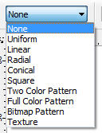
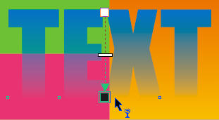
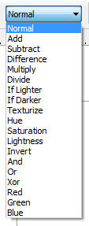
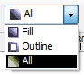
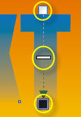
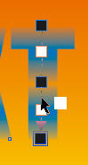
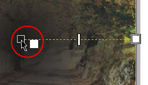

CorelDRAW transparency tool
CorelDRAWs transparency tool can really make a difference for your web-to-print templates. Lots of cool effects are achieved with combining simple transparencies, but it you to know how. Read on.
About the tool
The Transparency tool sits in CorelDRAW toolbox menu on the left under Interactive tools group. The default interactive tool is Blending tool. Click and hold on the icon to gain access to the other tools in the group and the Transparency tool it self.
Presets
/
CorelDRAW has several presets and properties in the top settings bar that comes up when the tool is active. You can pick any of them depending on the type of transparency you want to apply to the object. View examples of these presets at digitalscrapbookplace.com
/
/
/
The basic “Fade out” transparency is the Linear one. This is the default preset of the tool and is applied by clicking and dragging on the selected object with CorelDRAWs transparency tool activated.
/
Transparency operation
/
/
/
There are quite a few Transparency operation presets to chose from. These operations enable different overlaying options and most are dependent on the colors of the transparent object and the objects underneath it.
/
/
/
/
/
Here are a few samples of the same text frame on the same background color with different transparency operations assigned to it.
No transparency |
 “Normal” transparency |
“Add” transparency |
“Difference” transparency |
Transparency target
/
The transparency effect that you apply to an object can be assigned to the objects fill, outline (if the object has one) or both.
Transparency target: All |
 Transparency target: Fill |
Transparency target: Outline |
Complex transparency
/
By default, the tool is made up from a “from” and “to” color box and a slider in between.
- The light (White) color box represents the point where the transparency starts and the object is most visible;
- The dark (Black) color box represents the point where the transparency ends and the object is invisible;
- The slider controls the transition between the both.
/
You can also insert additional transparency points to achieve more complex transitions.
/
/
Click on a color (Black or White) from the color palette on the right, hold down the click, drag it above the transparency tool dotted line and release. New transition point appear and you can slide them just like the original ones.
/
/
Inverted transparency
CorelDRAW does not have a built-in Invert transparency option as a Transparency tool preset.

/
To invert the direction of the transparency fade in/fade out you need to invert the color squares of the tool. Click on a lighter color (Ex. White) in the color palette on the right, hold down the click, drag it above the black color square of the tool and release. Do the opposite to the white color box. Read more about inverted transparency in CorelDRAW.
Practical use
CorelDRAW Envelope tool can be used to achieve many different visual effects in web-to-print and dynamic imaging templates. Here are a few of the techniques where we used it:
 Underwater text glow |
 Overlayed typography |
 Reflected text |
 Fractured glass |
 Chameleon web buttons |
 Blending a photo |
Copy effect
If you want to use the same transparency settings on multiple objects you can save time by copying the effect rather than recreating it all over again for all objects.
Sselect the object you want the transparency copied to, go to Effects/Copy Effect/Lens From… and click on the object you want the transparency copied from.
Useful links
- Interactive Transparency tool at insidegraphics.com
- Transparency in CorelDRAW video tutorial at coreldrawtips.com
- Inverted transparency in CorelDRAW
- Contour tool
- CorelDRAW transparency operations
- CorelDRAW envelope tool
- Bevel Power Clip
- Transparent PowerClip
- CorelDRAW table tool – part 2
- CorelDRAW troubleshooting
- CorelDRAW custom artistic brush
- Blending as an alternative to Extrusion
- CorelDRAW rainbow
- Merge mode samples
- FREE CorelDRAW tutorials
- Create two-color patterns in CorelDRAW
- CorelDRAW table tool – Part 1
- Create full-color and bitmap patterns in CorelDRAW
- Pseudo perspective on a bitmap
- New fonts from existing ones
- Cropmarks from Photoshop
- Bleed area